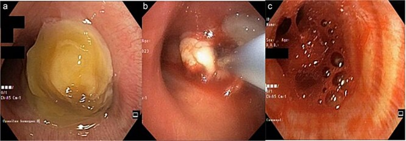
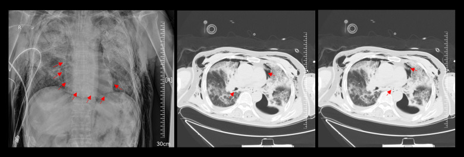
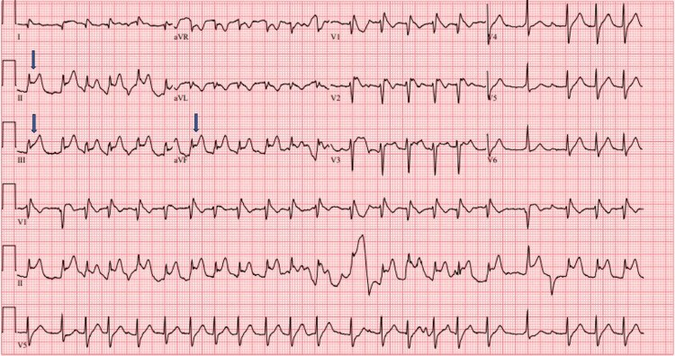

089 — Biến chứng & xử trí sau cryobiopsy trung thất qua EBUS (EBUS-TMC) / Complications and management of EBUS-guided transbronchial mediastinal cryobiopsy
Tags: pattern:bien-chung pattern:tran-khi-trung-that pattern:chay-mau vung:trung-that protocol:EBUS-TMC score:CTCAE
Mức chắc chắn (certainty): tổng hợp y văn (literature synthesis) — gộp 1 phân tích gộp 10 nghiên cứu (Mathew et al., J Thorac Dis 2024, PMC11320235), 3 cohort lớn (Echeverri-Hoyos 118 ca, PMC13626287; Mangold 137 ca, PMC11647314; Oruqaj 90 ca, PMC13148967), 2 ca nguyên văn dùng làm hình (PMC12008113, PMC13410793) và 1 báo cáo ca về biến chứng adrenergic (PMC13440509). Số nào chưa có nguồn kiểm chứng được ghi rõ "chưa rõ"; ca minh họa chảy máu là cryobiopsy nội phế quản, không phải EBUS-TMC — ghi rõ để không đánh tráo nguồn.
1. Tổng quan bệnh học – cơ chế hình ảnh
- EBUS-TMC làm gì (cơ chế gây biến chứng): đầu dò EBUS định vị hạch → tạo đường hầm (tunnelling) xuyên thành phế quản bằng kim 19G/22G hoặc dao điện → đưa cryoprobe 1,1 mm vào hạch, làm lạnh bằng hiệu ứng Joule–Thomson (3–5 giây, một số trung tâm 6–10 giây), mô dính vào đầu dò rồi kéo ra. Mẫu thu được trung bình 3,5 ± 0,9 mm (22G) và 3,6 ± 1,1 mm (19G) — lớn hơn hẳn cytoblock của TBNA (Oruqaj et al. 2026). Chính lỗ xuyên thành phế quản + mảnh mô lớn là nguồn của hai biến chứng chính: rò khí và chảy máu.
- Vì sao rò khí (air leak) xảy ra — vật lý đơn giản: đường thở có áp lực dương trong khi trung thất áp lực âm/trung tính. Một lỗ 1,1 mm xuyên thành phế quản tạo gradient áp lực đẩy khí vào trung thất; khí men theo bao mạch – phế quản (perivascular sheath) bóc tách lên cổ (hiệu ứng Macklin). Vì vậy khí có thể có mặt ở trung thất, mô mềm cổ, màng tim, màng phổi, thậm chí phúc mạc — cùng một cơ chế, nhiều ngăn.
- Vì sao chảy máu: hạch trung thất nằm sát động mạch phế quản, tĩnh mạch phế quản, động mạch phổi; mô lạnh khi tan băng (thaw) gây co – giãn mạch đột ngột và rách cơ học khi kéo mẫu. Đây là lý do chảy máu có thể muộn vài phút sau khi đã cầm (ca nguyên văn bên dưới: cầm máu bằng nước muối lạnh, 5 phút sau mới bùng lại).
- Ngưỡng định lượng phải nhớ (cửa 1 của Argon):
- Phân tích gộp 10 nghiên cứu, 844 bệnh nhân (554 cryobiopsy / 704 TBNA) — Mathew et al. 2024: chảy máu nhẹ 36,5% (không cần can thiệp), chảy máu cần can thiệp 0,7%, tràn khí màng phổi 0,4%, tràn khí trung thất 0,4%.
- Thực hành thực tế 118 ca — Echeverri-Hoyos et al. 2026: chẩn đoán xác định 92,4% (109/118); tràn khí trung thất 11,9%, co thắt phế quản 5,9%, tràn khí màng phổi 4,2%; không có tràn máu trung thất hay nhiễm trùng. Trạm sinh thiết hay gặp nhất trạm 7 (71,2%); lymphoma 27,9%, anthracosis 14,4%; PD-L1 làm được ở 37,3%.
- Cohort 137 ca — Mangold et al. 2024: chẩn đoán 56,2% (TBNA) vs 91,2% (cryobiopsy); làm lạnh 4–7 giây với probe 1,7 mm (18,2%) hoặc 6–10 giây với probe 1,1 mm (81,8%); đường hầm bằng dao điện 70,8%, kim 19G 12,4%, kim 22G 16,8%.
- Cohort 90 ca — Oruqaj et al. 2026: không có chảy máu nặng hay biến chứng nặng; thời gian thủ thuật 25,1 ± 3,9 phút (22G) vs 26,7 ± 5,3 phút (19G).
- Bối cảnh EBUS nói chung — Rizvi et al. 2025 (tổng quan): biến chứng 0,04–17%, nhiễm trùng 0,04–4%, tử vong 0,01–0,04%.
- Vì sao 0,4% (gộp) khác 11,9% (thực tế) tới ~30 lần — đây là bài học lớn nhất:
- Định nghĩa: "tràn khí trung thất" trong phân tích gộp thường chỉ tính ca có triệu chứng/cần can thiệp; cohort thực tế chụp CT sau thủ thuật nên bắt được cả ca không triệu chứng.
- Cách phát hiện: X-quang ngực bỏ sót phần lớn khí trung thất; CT là tiêu chuẩn.
- Kinh nghiệm và số mảnh: cohort thực tế gồm nhiều trung tâm mới triển khai; số mảnh và số lần đưa đầu dò chưa chuẩn hóa (chưa rõ số mảnh tối ưu — không có RCT).
- Hệ quả thực hành: không được đọc "0,4%" là "không cần theo dõi"; phải theo dõi lâm sàng 2–4 giờ và chụp khi có triệu chứng.
2. Mẫu hình + chẩn đoán phân biệt theo vị trí (gamut)
Câu hỏi thực hành: sau EBUS-TMC, bệnh nhân đau ngực, khó thở, đổi giọng, SpO₂ giảm, hoặc sưng cổ — đó là khí, máu, nhiễm, hay do thuốc mê? Xếp gamut theo thời điểm và cơ chế:
- Theo thời điểm:
- Trong thủ thuật: chảy máu tại chỗ, co thắt phế quản, co thắt thanh quản, tụt oxy do thuốc an thần.
- 0–30 phút sau: chảy máu muộn (đã "cầm" rồi bùng lại), tràn khí trung thất sớm, tràn khí màng phổi.
- 2–24 giờ: khí lan lên cổ (sưng mặt – cổ), khí màng tim, khó thở do chèn ép.
- 2–14 ngày: viêm trung thất, nhiễm trùng giường u, rò phế quản – trung thất, viêm màng tim.
- Theo cơ chế — nhớ "KHÍ – MÁU – NHIỄM – MÊ":
- KHÍ: tràn khí trung thất, tràn khí màng phổi, tràn khí màng tim, tràn khí dưới da, (hiếm) tràn khí phúc mạc.
- MÁU: chảy máu nhẹ (rỉ) → vừa (cần bóng chèn/thuốc co mạch) → nặng (tắc đường thở, cần đặt nội khí quản/blocker/ống cứng).
- NHIỄM: viêm trung thất, viêm màng tim, áp-xe giường u — thường muộn, sốt + CRP tăng.
- MÊ: tụt huyết áp, loạn nhịp, phản ứng thuốc tê, (và) biến chứng adrenergic do adrenaline tại chỗ (xem mục 5).
- Theo vị trí tổn thương trên CT: trung thất trước (quanh động mạch chủ – động mạch phổi), trung thất giữa (quanh khí quản – thực quản), trung thất sau, màng phổi, màng tim, mô mềm cổ.
3. Bảng so sánh phân biệt (ma trận đối chiếu)
| Thực thể (entity) | Hình ảnh điển hình | Chốt vào (rule-in) | Chốt loại (rule-out) | Gợi ý xác nhận |
|---|---|---|---|---|
| Tràn khí trung thất | CT: những "vệt khí" (streaks) viền quanh mạch máu và khí quản, khí trong mô mềm cổ; X-quang: dải khí dọc trung thất, dấu "continuous diaphragm" | Khí viền quanh khí quản/thực quản trên CT + sưng cổ sau thủ thuật | Khí trong lòng thực quản/khí quản (không phải mô mềm); kén khí phổi | CT ngực không cản quang, cửa sổ mô mềm |
| Tràn khí màng phổi | Đường màng phổi tạng, không có mạch máu ra ngoài đường đó; nằm thì deep sulcus | Đường màng phổi + khoang khí; có triệu chứng hoặc khoang rộng hơn 2 cm | Kén khí khổng lồ (còn vách/mạch bên trong); tràn khí ẩn chỉ thấy trên CT | CT ngực; so với 041 |
| Tràn khí màng tim | CT: quầng khí bao quanh tim, tách khỏi màng phổi; X-quang: viền khí quanh bóng tim | Khí trong bao tim + tiếng cọ màng tim, tụt HA | Khí trung thất đơn thuần (không bao quanh tim) | Siêu âm tim tại giường nếu huyết động bất ổn |
| Chảy máu nhẹ (rỉ) | Nội soi: máu đọng thành vệt, tự cầm; bệnh nhân còn nói được | Cầm sau hút + nước muối lạnh | Chảy máu phun thành tia / máu tràn hai phế quản | Nội soi lại ngay sau 2–5 phút |
| Chảy máu nặng | Nội soi: máu lấp kín lòng phế quản, bệnh nhân ho ra máu ồ ạt, SpO₂ tụt | Máu tràn sang phế quản đối diện hoặc tụt oxy là chốt nặng | Chỉ rỉ máu tại chỗ, SpO₂ giữ | Đặt nội khí quản + bóng chèn/blocker; nội soi ống cứng nếu cần |
| Viêm trung thất | CT: khí + dịch + dày mô mềm trung thất, có thể tụ dịch; sau 2–14 ngày | Sốt + đau ngực + CRP tăng sau thủ thuật, CT có dịch/khí | Đau cơ – xương do tư thế, không sốt, CRP bình thường | Cấy máu/dịch, kháng sinh tĩnh mạch rộng |
| Co thắt phế quản | Không có tổn thương trên CT; khò khè + tăng áp lực đường thở khi thông khí | Khò khè ± tụt SpO₂ ngay sau đưa đầu dò, đáp ứng giãn phế quản | Tắc do máu/nút nhầy (nhìn thấy trên nội soi) | Giãn phế quản khí dung; nội soi kiểm tra |

Ca nguyên văn: nam giới, u phổi phải lớn 9,6 × 9,5 × 14,5 cm; máu đã cầm bằng nước muối lạnh nhưng bùng lại sau 5 phút. Nguồn: Nadzir M et al., J Surg Case Rep 2025, PMC12008113 Fig. 2, CC BY 4.0 (giữ nguyên bản, không crop).Đọc đúng hai hình ảnh then chốt
- Khí trung thất trên CT: tìm "khí viền quanh khí quản và thực quản" ở cửa sổ mô mềm — không phải khí trong lòng ống tiêu hóa. Hình dưới là ca sau can thiệp nội soi phế quản ở bệnh nhân mở khí quản, ho ra máu + SpO₂ < 85% do ho mạnh: khí lan mô mềm cổ và trung thất, kèm tràn khí màng phổi trái.
- Chảy máu trên nội soi: đánh giá ba yếu tố: (1) máu có tràn sang phế quản đối diện không, (2) bệnh nhân còn tự thở/tự bảo vệ đường thở không, (3) SpO₂. Chỉ cần (1) hoặc SpO₂ tụt là chảy máu nặng, không chờ đánh giá thêm.

CT ngực: khí trong mô mềm cổ – trung thất, chủ yếu quanh khí quản và thực quản. Nguồn: Pengcheng L et al., Am J Case Rep 2026, PMC13410793 Fig. 2, CC BY-NC-ND 4.0 (dùng nguyên bản, không crop/ghép).4. Protocol chụp + hệ phân độ/điểm chuẩn hóa + xử trí
4.1. Chuẩn bị (pre-procedure)
- CT ngực có cản quang trước thủ thuật: đánh giá vị trí hạch – quan hệ mạch máu, phát hiện giãn động mạch phế quản, phình động mạch chủ (chống chỉ định tương đối với đường hầm ở vị trí sát mạch).
- Đông máu: các series không nêu ngưỡng thống nhất; thực hành phổ biến là tiểu cầu ≥ 50 G/L và INR ≤ 1,5 — chưa có RCT cho EBUS-TMC, ghi rõ là thực hành, không phải bằng chứng. Ngừng kháng kết tập theo phác đồ của đơn vị.
- Chuẩn bị "cứu hộ": bóng chèn (balloon) luồn sẵn qua kênh làm việc, adrenaline pha loãng, nước muối lạnh, ống nội khí quản và blocker phế quản trong phòng; hai người thao tác (một người giữ đầu dò – một người lo đường thở) như mô tả trong kỹ thuật "hai ống soi".
4.2. Trong thủ thuật (intra-procedure)
- Đầu dò 1,1 mm, làm lạnh 3–5 giây (hoặc 6–10 giây nếu dùng 1,1 mm theo Mangold) — không kéo khi mô còn dính mạnh.
- Kiểm tra Doppler trước khi tạo đường hầm ở hạch sát mạch.
- Lấy mẫu "kéo qua kênh" (in-channel extraction): kỹ thuật mới rút mẫu qua kênh làm việc mà không cần rút ống soi — 30 ca trung thất + 10 ca phổi, 3 giây làm lạnh, không biến chứng, thời gian 15,7 ± 6,3 phút (trung thất) và 14,6 ± 5,8 phút (phổi) — giữ được quan sát liên tục và xử trí chảy máu ngay (Ariza-Prota et al. 2025). Đây là biện pháp phòng ngừa đáng giá vì mất tầm nhìn chính là lúc chảy máu nguy hiểm nhất.
- Số mảnh: thực hành 2–3 mảnh/trạm trong các series; số mảnh tối ưu chưa được xác định bằng RCT — ghi "chưa rõ".
4.3. Sau thủ thuật (post-procedure) — theo dõi và ngưỡng xử trí
- Theo dõi tối thiểu 2–4 giờ tại phòng hồi tỉnh: SpO₂, nhịp thở, đau ngực, giọng nói, sưng cổ.
- Chụp X-quang ngực nếu có triệu chứng; CT ngực khi nghi khí trung thất, khí màng tim, hoặc tràn khí màng phổi không rõ trên X-quang. (Không chụp thường quy: cohort 118 ca có 11,9% tràn khí trung thất chủ yếu nhờ CT — nếu chỉ chụp khi có triệu chứng, con số thực hành sẽ thấp hơn nhiều, nhưng không được bỏ theo dõi lâm sàng.)
- Ngưỡng dẫn lưu khí trung thất: chỉ định khi chèn ép khí quản/thực quản, khí lan nhanh, hoặc tràn khí màng tim có tamponade; trường hợp không chèn ép: oxy, giảm đau, theo dõi 24 giờ (đa số tự tiêu).
- Ngưỡng dẫn lưu tràn khí màng phổi: có triệu chứng hoặc khoang khí rộng hơn 2 cm — theo ngưỡng chung của tràn khí màng phổi (xem 041); tràn khí áp lực: chọc giải áp ngay, không chờ CT.
- Bậc thang cầm máu (leo từng bậc, không nhảy bậc):
- Hút liên tục + nước muối lạnh (co mạch, rửa máu).
- Bóng chèn (balloon tamponade) qua kênh làm việc, bơm vừa đủ để bít phế quản nguồn — giữ 5–10 phút rồi xả từ từ.
- Thuốc co mạch tại chỗ: adrenaline pha loãng (thường 1:10 000–1:20 000) — thận trọng: có ca ST chênh lên thoáng qua sau adrenaline nội phế quản (xem mục 5); phenylephrine là lựa chọn thay thế ít tác dụng β hơn.
- Tranexamic acid: khí dung 250–500 mg trong 5 mL NaCl 0,9% mỗi 6–8 giờ (dữ liệu từ ho ra máu, không phải RCT riêng cho cryobiopsy); IV 500–1000 mg mỗi 6–8 giờ khi chảy máu vừa – nặng.
- Chảy máu nặng/không cầm: đặt nội khí quản + blocker phế quản, hoặc nội soi ống cứng để hút và kiểm soát; hội chẩn gây mê – ngoại lồng ngực; cân nhắc nút mạch động mạch phế quản nếu chảy máu dai dẳng.
- Nhiễm trùng: không khuyến cáo kháng sinh dự phòng thường quy cho EBUS-TMC (các cohort không ghi nhận nhiễm trùng); theo dõi sốt + CRP sau 48–72 giờ.
flowchart TD
A[Sau EBUS-TMC: dau nguc, kho tho, doi giong, SpO2 giam] --> B{Tut HA + khi quan lech + kho tho nang?}
B -->|Co| C[Tran khi ap luc: choc giai ap ngay]
B -->|Khong| D[CT nguc lat mong]
D --> E{Co khi trung that?}
E -->|Co nhung khong chen ep| F[Oxy, giam dau, theo doi 24 gio]
E -->|Co va chen ep khi quan hoac thuc quan| G[Dan luu trung that + hoi chan ngoai]
E -->|Khong| H{Tran khi mang phoi co trieu chung hoac khoang rong hon 2 cm?}
H -->|Co| I[Hut hoac dan luu mang phoi]
H -->|Khong| J[Theo doi, X-quang lai sau 4 den 6 gio]
5. Biến thể bình thường và cạm bẫy
- Cạm bẫy 1 — "cầm máu rồi" không có nghĩa là an toàn. Ca nguyên văn: máu ngừng sau nước muối lạnh, 5 phút sau bệnh nhân tụt oxy, nội soi lại thấy máu lấp cả hai phế quản chính, ngừng tim. Bài học: ở lại phòng, quan sát ít nhất 5–10 phút sau khi cầm máu, và không rút ống soi cho tới khi chắc chắn.
- Cạm bẫy 2 — adrenaline nội phế quản gây "giả nhồi máu". Hai ca sau adrenaline nội phế quản có ST chênh lên ở chuyển đạo dưới (II, III, aVF), được chụp mạch vành cấp → không hẹp, điện tâm đồ tự về bình thường; cơ chế nghi do co thắt mạch vành thoáng qua do thành phần β. Xử trí: ngừng adrenaline, ECG lặp lại, troponin, chỉ can thiệp nếu ST không lui. Cân nhắc phenylephrine thay thế.
- Cạm bẫy 3 — "tràn khí trung thất" trên CT không đồng nghĩa "cần mổ". Phần lớn không chèn ép, tự tiêu trong 24–72 giờ; chỉ dẫn lưu khi có chèn ép hoặc tamponade.
- Cạm bẫy 4 — nhầm giải phẫu trên EBUS. Ngách động mạch chủ trên (superior aortic recess) giữa động mạch chủ lên và động mạch phổi trái có thể bị đọc nhầm là hạch 4R/4L; chọc vào đây vừa không lấy được hạch, vừa tăng nguy cơ chảy máu. Luôn dùng Doppler và xác nhận bằng hình thái.
- Cạm bẫy 5 — co thắt phế quản bị bỏ qua vì "chỉ là ho". Khò khè + tăng áp lực đường thở ngay sau đưa đầu dò là dấu hiệu; xử trí giãn phế quản khí dung, không tiếp tục lấy thêm mảnh.
- Biến thể bình thường: khí trong thực quản và khí trong túi thừa khí quản có thể giả tràn khí trung thất trên CT — phân biệt bằng vị trí trong lòng ống và không lan dọc bao mạch.
6. Tự lượng giá — Blind Quiz
Ca 1 — Nam giới, u phổi phải lớn, ho ra máu sau can thiệp
- Bối cảnh: khối u phổi phải 9,6 × 9,5 × 14,5 cm, chèn phế quản chính phải; đã làm cryobiopsy nội phế quản.
- Câu hỏi: Mô tả 3 panel (a, b, c). Panel (c) nói gì về thời điểm biến chứng? Ba việc phải làm ngay?
Bấm để hiện đáp án (findings + chẩn đoán)
- (a) Khối u lấp gần hết phế quản chính phải, phế quản trái còn thông; (b) đầu dò cryo áp vào khối u trong lòng phế quản; (c) máu đọng và lan sang cả hai phế quản chính — hình ảnh này chụp 5 phút sau khi đã cầm máu ban đầu.
- Chẩn đoán: chảy máu nặng muộn sau cryobiopsy, tắc đường thở hai bên → ngừng tim.
- Ba việc ngay: (1) hút + nước muối lạnh, (2) bóng chèn/blocker vào phế quản phải, (3) đặt nội khí quản và gọi gây mê — không chờ cầm máu tự nhiên.
- Phản biện nguồn: đây là cryobiopsy nội phế quản (không phải EBUS-TMC); cơ chế chảy máu tương tự nhưng nguy cơ tắc đường thở cao hơn vì tổn thương nằm trong lòng phế quản lớn. Dùng làm bài học về chảy máu muộn, không dùng để suy ra tỷ lệ biến chứng của EBUS-TMC.
- Nguồn: Nadzir M et al., J Surg Case Rep 2025, PMC12008113, Fig. 2, CC BY 4.0.
Ca 2 — Bệnh nhân mở khí quản, ho dữ dội khi nội soi, SpO₂ < 85%
- Bối cảnh: nam 69 tuổi, mở khí quản > 1 tháng, nội soi phế quản tại giường để hút đờm và rửa phế quản; ho dữ dội rồi tụt oxy, sưng lan cổ – ngực.
- Câu hỏi: Khí nằm ở đâu? Cơ chế nào giải thích cả khí trung thất và tràn khí màng phổi trái? Xử trí đầu tay?
Bấm để hiện đáp án (findings + chẩn đoán)
- Findings: khí trong mô mềm cổ và trung thất, viền quanh khí quản và thực quản; kèm tràn khí màng phổi trái.
- Cơ chế: hiệu ứng Macklin — khí từ phế quản thoát ra men theo bao mạch – phế quản vào trung thất, lan lên mô mềm cổ; đồng thời khí vào khoang màng phổi. Ho dữ dội làm tăng áp lực đường thở, là yếu tố khởi phát.
- Xử trí: oxy + giảm đau + theo dõi sát; dẫn lưu màng phổi nếu tràn khí có triệu chứng/lớn; dẫn lưu trung thất chỉ khi chèn ép. Ở ca này, tràn khí màng phổi trái là chỉ định dẫn lưu rõ.
- Nguồn: Pengcheng L et al., Am J Case Rep 2026, PMC13410793, Fig. 2, CC BY-NC-ND 4.0 (nguyên bản).
Ca 3 — ST chênh lên ngay sau khi bơm adrenaline vào phế quản

- Bối cảnh: bệnh nhân được nội soi phế quản robot, chảy máu sau sinh thiết, bơm adrenaline tại chỗ; ECG ngay sau đó.
- Câu hỏi: Chẩn đoán điện tâm đồ? Cơ chế? Bước tiếp theo và cách phòng?
Bấm để hiện đáp án (findings + chẩn đoán)
- Findings: ST chênh lên ở II, III, aVF (mũi tên xanh) — hình ảnh "nhồi máu thành dưới" thoáng qua.
- Chẩn đoán: co thắt mạch vành do adrenaline (bắt chước STEMI), không phải huyết khối: chụp mạch vành không hẹp, ECG tự về bình thường.
- Bước tiếp theo: ngừng adrenaline, ECG lặp lại + troponin, đánh giá huyết động; chỉ can thiệp mạch vành nếu ST không lui.
- Phòng: dùng nồng độ pha loãng, liều nhỏ nhất hiệu quả; cân nhắc phenylephrine (co mạch tại chỗ, không kích thích β).
- Nguồn: Wortsman J et al., Cureus 2026, PMC13440509, Fig. 1, CC BY 4.0.
Bài liên quan chéo
- 044 – Cryobiopsy trung thất qua EBUS (EBUS-TMC): chỉ định & kỹ thuật
- 018 – EBUS-TBNA & EUS-B: chọc hút hạch trung thất
- 041 – Tràn khí màng phổi: ngưỡng dẫn lưu & tràn khí áp lực
- 061 – Tràn khí trung thất
- 046 – Tái phân giai đoạn trung thất sau hóa–miễn dịch
Ảnh
089_EBUS-TMC-chay-mau_NS_PMC12008113-Fig2-CCBY.jpg,089_EBUS-TMC-khoi-u_CT_PMC12008113-Fig1-CCBY.jpg— PMC12008113, CC BY 4.0.089_pneumomediastinum_CT_PMC13410793-Fig2-CCBYNCND.jpg— PMC13410793, CC BY-NC-ND 4.0 (nguyên bản).089_EBUS-TMC-rua-ong_NS_PMC12689022-Fig1-CCBY.jpg— PMC12689022, CC BY 4.0.089_epinephrine-STEMI_ECG_PMC13440509-Fig1-CCBY.jpg— PMC13440509, CC BY 4.0.- Nguồn + giấy phép từng ảnh:
images/CREDITS.md.
Không dùng để chẩn đoán độc lập khi chưa có người hướng dẫn.